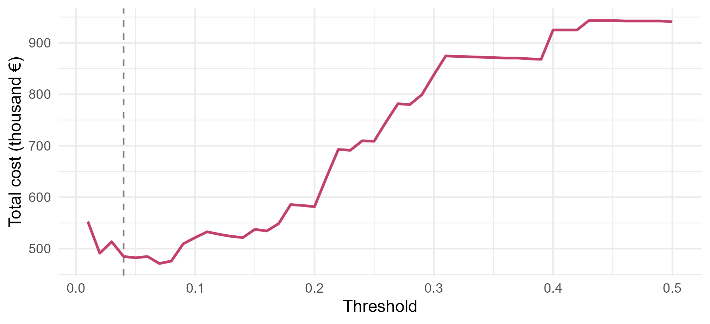

Module 7 · Lesson 6 of 14 Week 109 of 160 About 5–7 hours
Evaluating classifiers
Beyond the error rate
Predict which pumps will fail within 30 days, where only 1 record in 15 is a failure and a 93% accurate model can be useless. Build the confusion matrix, compute sensitivity, specificity and precision, move the threshold, draw the ROC curve and compute its AUC two ways, then choose the threshold that minimizes the real cost of missed failures and needless inspections. Finish by checking whether the probabilities can be trusted, overall and at each site.
The plant has 125 pumps at two sites, and each month the reliability team records their condition: vibration, bearing temperature, motor current, seal flush pressure and hours since the last service. When a pump fails unexpectedly, it costs about €20,000: lost production, emergency repairs, and sometimes a seal fire. An inspection, which catches most failures before they happen, costs about €800. The team wants a model that says which pumps to inspect this month.
pump_failures.csv has 3,000 monthly records, each labeled with whether the pump failed within the next 30 days. Only about 1 in 15 did. That makes this a different problem from the alarms of Lessons 3 to 5, where the classes were balanced: with rare events, the error rate, the measure used so far, can be badly misleading. This lesson is about better measures, and about turning a model’s probabilities into decisions.
“It’s 93% accurate!” is one of the most dangerous sentences in machine learning. By the end of this lesson, you’ll know exactly why, and what to ask instead.
In this lesson you’ll:
- see why accuracy fails for rare events
- build a confusion matrix and compute sensitivity, specificity and precision
- move the decision threshold, and trace the ROC curve
- compute the AUC, with
pROCand from ranks - choose a threshold from the costs of the two kinds of mistakes
- check whether the predicted probabilities are calibrated, overall and by site
The setup, and a useless model
The setup code drops the 150 records whose bearing temperature sensor was offline, splits the remaining 2,850 at random into 1,900 for training and 950 for testing, and fits a logistic regression on the training set. p holds its predicted failure probabilities for the 950 test records.
Your turn. Find the share of test records that failed, and the accuracy of a “model” that predicts that no pump ever fails.
“Never fails” predicts 0 for every record. It’s right whenever test$failed == 0.
c(failure_rate = mean(test$failed),
accuracy_of_never = mean(test$failed == 0))6.8% of the test records failed, so predicting “no failure” every time is 93.2% accurate, and completely useless: it never catches a failure. Any model’s accuracy has to be judged against this, and for rare events, accuracy hardly moves when the model gets better or worse at the thing that matters.
The confusion matrix
A classifier that flags a pump when \hat p \ge t makes two kinds of mistakes, and the confusion matrix counts them:
| Actually failed | Didn’t fail | |
|---|---|---|
| Flagged | true positive (TP) | false positive (FP) |
| Not flagged | false negative (FN) | true negative (TN) |
Your turn. Make the confusion matrix for the logistic model at the usual threshold of 0.5.
Flag a pump when its probability is at least 0.5.
flag <- p >= 0.5
table(flagged = flag, failed = test$failed)Of the 65 failures, the model flags 19 and misses 46. It also flags 7 pumps that were fine. Its accuracy is (878 + 19)/950 = 94.4\%, barely better than “never fails”. But it does catch 19 failures that “never fails” would miss, at the cost of 7 needless inspections. Accuracy can’t see that difference; the confusion matrix can.
From the four counts come the measures that matter:
| Measure | Formula | The question it answers |
|---|---|---|
| Sensitivity (recall, true positive rate) | TP / (TP + FN) | Of the pumps that failed, what share did we flag? |
| Specificity (true negative rate) | TN / (TN + FP) | Of the pumps that were fine, what share did we leave alone? |
| Precision (positive predictive value) | TP / (TP + FP) | Of the pumps we flagged, what share were really going to fail? |
| False positive rate | FP / (FP + TN) = 1 − specificity | Of the pumps that were fine, what share did we flag? |
Medicine speaks of sensitivity and specificity; information retrieval of precision and recall. They’re the same four counts, seen from different sides.
Your turn. Write a function that computes sensitivity, specificity and precision for any threshold, and use it at 0.5.
Precision divides the true positives by everything flagged: sum(flag).
rates <- function(t) {
flag <- p >= t
y <- test$failed == 1
c(sensitivity = sum(flag & y) / sum(y),
specificity = sum(!flag & !y) / sum(!y),
precision = sum(flag & y) / sum(flag))
}
rates(0.5)A sensitivity of 29%, a specificity of 99.2% and a precision of 73%. When this model flags a pump, it’s usually right, but it flags too few: 71% of the failures go unflagged. For the reliability team, that’s the wrong balance.
Moving the threshold
Nothing forces the threshold to be 0.5. Lowering it flags more pumps: more failures caught (higher sensitivity), more needless inspections (lower specificity and precision).
Your turn. Compute the three rates at a threshold of 0.1.
Call rates(0.1).
rates <- function(t) {
flag <- p >= t
y <- test$failed == 1
c(sensitivity = sum(flag & y) / sum(y),
specificity = sum(!flag & !y) / sum(!y),
precision = sum(flag & y) / sum(flag))
}
rbind(t0.5 = rates(0.5), t0.1 = rates(0.1))At 0.1, the model catches 68% of the failures (44 of 65), against 29%. The price: specificity falls to 90.6%, and precision to 35%, so about two of every three inspections find nothing wrong. Whether that’s a good trade depends on what the mistakes cost, which is a question for the reliability team, not for the model.
The ROC curve and the AUC
Every threshold gives a pair (false positive rate, sensitivity). Tracing them all, from t = 1 (flag nothing) to t = 0 (flag everything), draws the ROC curve (receiver operating characteristic, a name from radar engineering):
r <- pROC::roc(test$failed, p, quiet = TRUE)
roc_df <- data.frame(fpr = 1 - r$specificities, tpr = r$sensitivities)
pts <- data.frame(t = c(0.5, 0.1), fpr = c(mean(p[test$failed == 0] >= 0.5), mean(p[test$failed == 0] >= 0.1)),
tpr = c(mean(p[test$failed == 1] >= 0.5), mean(p[test$failed == 1] >= 0.1)))
ggplot(roc_df[order(roc_df$fpr, roc_df$tpr), ], aes(fpr, tpr)) +
geom_abline(linetype = "dashed", color = "grey60") +
geom_step(color = "#C2416C", linewidth = 0.9) +
geom_point(data = pts, size = 2.5, color = "#3A1F35") +
geom_text(data = pts, aes(label = paste("t =", t)), nudge_x = 0.13, size = 3.5) +
coord_equal() +
labs(x = "False positive rate (1 − specificity)", y = "Sensitivity") +
theme_minimal(base_size = 12)
A perfect classifier’s curve goes straight up the left side to the top-left corner; a useless one follows the diagonal. The area under the curve (AUC) summarizes it in one number, from 0.5 (useless) to 1 (perfect). It measures how well the model ranks the records, regardless of any threshold.
Your turn. Compute the AUC with pROC::roc() and pROC::auc().
The predictor is the model’s probabilities, p.
r <- pROC::roc(response = test$failed, predictor = p, quiet = TRUE)
as.numeric(pROC::auc(r))0.852. pROC::ci.auc(r) gives a 95% interval of 0.79 to 0.91: with only 65 failures in the test set, the AUC itself is uncertain. Rules of thumb call 0.8 to 0.9 “good”, but the AUC is best used to compare models on the same data, not as a grade.
The AUC has a direct meaning: it’s the probability that a randomly chosen failure gets a higher predicted probability than a randomly chosen non-failure. That’s the Mann-Whitney (Wilcoxon rank-sum) statistic, and it gives a way to compute the AUC from ranks.
Your turn. Compute the AUC from the ranks of p: the sum of the failures’ ranks, minus its smallest possible value, divided by the number of failure/non-failure pairs.
There are n_1 \times n_0 pairs.
rk <- rank(p)
n1 <- sum(test$failed == 1)
n0 <- sum(test$failed == 0)
(sum(rk[test$failed == 1]) - n1 * (n1 + 1) / 2) / (n1 * n0)0.852 again, exactly. Of the 65 \times 885 = 57{,}525 pairs of a failure and a non-failure, the model ranks the failure higher in 85% of them. This is why the AUC ignores the threshold, and also why it can’t tell you whether the probabilities are right: multiplying every \hat p by 10 leaves the ranks, and the AUC, unchanged.
Precision and recall with rare events
The ROC curve’s horizontal axis, the false positive rate, divides by the 885 healthy pumps, so even a lot of needless inspections look like a small rate. For rare events, the precision-recall view is often more honest: as you flag more pumps to raise recall, what share of your inspections are worth it?
Your turn. Sort the test records from the highest \hat p to the lowest, and find the threshold that first reaches 80% recall, with the precision and the number of pumps flagged there.
80% recall is recall >= 0.8.
o <- order(p, decreasing = TRUE)
caught <- cumsum(test$failed[o])
recall <- caught / sum(test$failed)
precision <- caught / seq_along(o)
k <- which(recall >= 0.8)[1]
c(threshold = p[o][k], precision = precision[k], flagged = k)To catch 80% of the failures (52 of 65), the team would have to inspect 302 of the 950 pumps, with a threshold of 0.028, and only 17% of those inspections would find a pump about to fail. On the ROC curve, the same point is a comfortable-looking false positive rate of 28%. The precision tells the reliability team what their week will look like.
Choosing a threshold from costs
The right threshold comes from the costs. If a missed failure costs C_{FN} and an inspection costs C_{FP}, inspecting a pump with failure probability p is worth it when the expected saving beats the inspection’s cost:
p \cdot C_{FN} > C_{FP} \quad\Longleftrightarrow\quad p > \frac{C_{FP}}{C_{FN}} .
This assumes that an inspection always prevents the failure, and costs the same whether or not the pump was going to fail. With €800 and €20,000, the threshold is 0.04: a pump with a 1-in-25 chance of failing is worth inspecting. That assumes the probabilities are right, which the next step checks.
Your turn. Compute the total cost on the test set, for thresholds from 0.01 to 0.5: €800 for every pump flagged, plus €20,000 for every failure missed. Find the cheapest threshold, and compare its cost with flagging nothing and flagging everything.
A missed failure is a pump that wasn’t flagged and did fail: test$failed == 1.
thr <- seq(0.01, 0.5, by = 0.01)
cost <- sapply(thr, function(t) {
flag <- p >= t
800 * sum(flag) + 20000 * sum(!flag & test$failed == 1)
})
c(best_threshold = thr[which.min(cost)], best_cost = min(cost), cost_at_0.04 = cost[thr == 0.04],
flag_none = 20000 * sum(test$failed), flag_all = 800 * nrow(test))The cheapest threshold on the test set is 0.07, at €471,200, and the theoretical 0.04 costs €484,800, within 3%. Doing nothing would cost €1.3 million, and inspecting every pump €760,000. The model saves €275,000 to €289,000 against the better of the two simple policies (inspecting everything), on 950 pump-months. With only 65 failures, the cost curve is bumpy, and its exact minimum is partly luck: the theoretical threshold, which comes from the costs alone, is the more trustworthy choice, if the probabilities are calibrated.
thr <- seq(0.01, 0.5, by = 0.01)
cost <- sapply(thr, function(t) { flag <- p >= t; 800 * sum(flag) + 20000 * sum(!flag & test$failed == 1) })
ggplot(data.frame(thr, cost), aes(thr, cost / 1000)) +
geom_vline(xintercept = 0.04, linetype = "dashed", color = "grey50") +
geom_line(color = "#C2416C", linewidth = 0.9) +
labs(x = "Threshold", y = "Total cost (thousand €)") +
theme_minimal(base_size = 12)
Are the probabilities right?
A model is calibrated if, among the records it gives a probability near p, about a share p really fail. The AUC can’t check this (it only uses ranks), but cost-based thresholds depend on it.
Your turn. Split the test records into five equal groups by \hat p, and compare each group’s average predicted probability with its observed failure rate.
Five groups need the quantiles at 0, 0.2, 0.4, 0.6, 0.8 and 1: by = 0.2.
group <- cut(p, breaks = quantile(p, probs = seq(0, 1, by = 0.2)), include.lowest = TRUE)
round(cbind(predicted = tapply(p, group, mean), observed = tapply(test$failed, group, mean)), 3)The top group’s predicted 24.7% matches its observed 25.3%, and the middle groups are close. In the bottom two, the model predicts 0.2% and 0.5%, but 1.6% and 2.1% failed: 7 failures in pumps the model was nearly sure about. With 190 records per group, those differences are partly noise, but they’re worth a closer look. The next challenge finds where they come from.
NoteGo deeper: scoring rules
Thresholded measures (sensitivity, precision) depend on t, and the AUC ignores the probabilities’ values. A proper scoring rule judges the probabilities themselves, and is minimized, on average, by the true probabilities. The two common ones:
- the Brier score, \frac{1}{n}\sum_i (\hat p_i - y_i)^2, the mean squared error of the probabilities. Here it’s 0.044, against 0.064 for predicting the training failure rate for every pump;
- the log loss, -\frac{1}{n}\sum_i \big[y_i \log \hat p_i + (1 - y_i)\log(1 - \hat p_i)\big], the negative log-likelihood per record, which logistic regression minimizes on the training data.
Both reward calibration and discrimination at once. Gneiting and Raftery’s “Strictly Proper Scoring Rules, Prediction, and Estimation” (Journal of the American Statistical Association, 2007) is the standard reference.
Challenge round
Challenge 1 · Weighting the rare class. A common remedy for imbalance is to give the failures more weight in the fit. Refit the logistic regression on the training set with a weight of 10 for each failure, and compare its AUC and its average predicted probability with the original model’s.
Give each failure a weight of 10.
tr <- pumps[train, ]
w <- ifelse(tr$failed == 1, 10, 1)
fit_w <- suppressWarnings(glm(failed ~ vibration_mm_s + bearing_temp_C + hours_since_service + pump_type + seal_flush_bar + motor_current_pct,
family = binomial, data = tr, weights = w))
p_w <- predict(fit_w, test, type = "response")
c(auc_original = as.numeric(pROC::auc(pROC::roc(test$failed, p, quiet = TRUE))),
auc_weighted = as.numeric(pROC::auc(pROC::roc(test$failed, p_w, quiet = TRUE))),
mean_p_original = mean(p), mean_p_weighted = mean(p_w))The AUC hardly changes (0.852 both ways), but the average predicted probability jumps from 6% to 22%, while the real failure rate is still 6.8%. Weighting the failures is, roughly, the same as moving the threshold: it changes where the 0.5 line falls, not how well the model ranks. It also destroys the calibration, so the weighted model’s “22%” means nothing as a probability. For a model like logistic regression, it’s usually better to fit it unweighted and choose the threshold from the costs. (glm() warns about non-integer successes with weights; suppressWarnings() hides it.)
Challenge 2 · Calibrated everywhere? Compare the average predicted probability with the observed failure rate at each site, in the test set.
Group by test$site.
round(cbind(predicted = tapply(p, test$site, mean), observed = tapply(test$failed, test$site, mean)), 3)At North, the model predicts 7.6% and 7.2% failed: fine. At South, it predicts 3.7%, but 6.3% failed: the model under-predicts South’s failures by almost half. At a threshold of 0.1, it catches 73% of North’s failures but only 60% of South’s. The model didn’t use the site, and something about South’s measurements misleads it. (The reliability team later found the cause: South’s vibration sensors are a different brand, which reads about 25% lower.) An overall calibration check can hide a group the model serves badly. Lesson 14 comes back to this.
Quick quiz
1. 7% of records are failures. A model is 93% accurate. What do you know?
With rare events, compare against the trivial model, and look at sensitivity and precision.
2. What does sensitivity measure?
The second is precision, the third specificity.
3. What happens when you lower the threshold?
More pumps are flagged. The AUC doesn’t depend on the threshold.
4. What does an AUC of 0.85 mean?
It’s a rank statistic, the Mann-Whitney probability.
5. A miss costs €20,000 and an inspection €800. Above what probability should a pump be inspected, if the probabilities are calibrated?
800 / 20{,}000 = 0.04.
6. Weighting the failures by 10 left the AUC unchanged. What did it change?
It moved the 0.5 line, much as lowering the threshold would.
Wrap-up
You can now judge a classifier by what matters, and turn its probabilities into decisions. Here’s what you’ve learned:
- Accuracy misleads with rare events: “never fails” is 93.2% accurate.
- The confusion matrix gives sensitivity, specificity and precision. At 0.5, the pump model caught 29% of failures, with 73% precision.
- Moving the threshold trades sensitivity for specificity: at 0.1, it caught 68%.
- The ROC curve traces every threshold, and its AUC, 0.852, is the probability of ranking a failure above a non-failure.
- Precision-recall shows the workload: 80% recall meant 302 inspections, 17% of them useful.
- Costs choose the threshold: C_{FP}/C_{FN} = 0.04 saved €275,000 on the test set against the best simple policy, if the probabilities are calibrated.
- Calibration checks the probabilities themselves. They were good overall, but South’s failures were under-predicted by almost half.
TipPractice in RStudio (optional, about an hour)
Download pump_failures.csv into your project’s data-raw/ folder, and install pROC.
- Plot the curves.
plot(pROC::roc(...))draws the ROC curve. Draw the precision-recall curve yourself fromprecisionandrecall, and compare the two. - Compare two models. Fit a second model that adds
siteas a predictor. Compare the two ROC curves withpROC::roc.test(). Is the difference significant? - Cross-validate the AUC. Instead of one test set, use 10-fold CV with folds that keep each pump together (grouped by
pump). How does the AUC compare? - A calibration plot. Plot the observed failure rate against the predicted probability in 10 groups, with the diagonal.
ggplot2::geom_smooth()on the 0/1 outcomes against \hat p gives a smooth version.
NoteKey words from this lesson
- Confusion matrix
- A table of predicted against actual classes, counting true and false positives and negatives.
- Sensitivity (recall, true positive rate)
- TP / (TP + FN): the share of actual positives that are flagged.
- Specificity
- TN / (TN + FP): the share of actual negatives that aren’t flagged.
- Precision (positive predictive value)
- TP / (TP + FP): the share of flagged cases that are actual positives.
- ROC curve
- Sensitivity against the false positive rate, over all thresholds.
- AUC
- The area under the ROC curve: the probability that a random positive is ranked above a random negative.
- Calibration
- Agreement between predicted probabilities and observed frequencies.
- Class imbalance
- When one class is much rarer than the other, which makes accuracy a poor measure.
NoteWant to read more?
- James, Witten, Hastie and Tibshirani, An Introduction to Statistical Learning (2nd edition), section 4.4.2, on the confusion matrix, thresholds and the ROC curve.
- Tom Fawcett, “An introduction to ROC analysis”, Pattern Recognition Letters 27(8), 2006, doi:10.1016/j.patrec.2005.10.010. The standard tutorial.
- Takaya Saito and Marc Rehmsmeier, “The Precision-Recall Plot Is More Informative than the ROC Plot When Evaluating Binary Classifiers on Imbalanced Datasets”, PLOS ONE 10(3), 2015, doi:10.1371/journal.pone.0118432.
- Charles Elkan, “The Foundations of Cost-Sensitive Learning”, IJCAI 2001. The derivation of the cost-based threshold, and why weighting and moving the threshold are related.